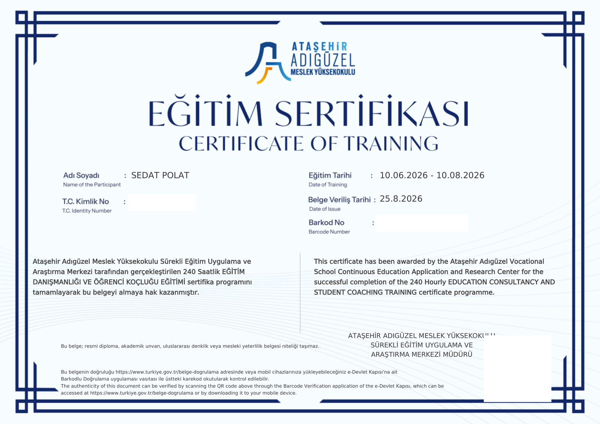

LGS
LGS Koçluğu
LGS hazırlığında ders ve konu planlaması, soru çözüm takibi, deneme analizi, okul temposuna uygun çalışma düzeni ve sınava kadar sürdürülebilir takip.
LGS, YKS ve KPSS hazırlığında çalışma planı, deneme analizi, düzenli takip ve tercih danışmanlığını tek bir sistemde bir araya getiren öğrenci koçluğu yaklaşımı.
Her öğrenci için ihtiyaç duyulan destek aynı değildir. Sistem; hedefe, mevcut seviyeye ve çalışma düzenine göre şekillenir.
LGS hazırlığında ders ve konu planlaması, soru çözüm takibi, deneme analizi, okul temposuna uygun çalışma düzeni ve sınava kadar sürdürülebilir takip.
TYT ve AYT sürecinde haftalık planlama, konu-soru takibi, deneme analizi ve çalışma düzeninin sürdürülebilir hâle getirilmesi.
KPSS hazırlığında ders dağılımı, tekrar sistemi, soru çözüm düzeni ve sınava kadar uzanan kontrollü çalışma planı.
Puan, sıralama, bölüm ve şehir seçeneklerini birlikte değerlendirerek daha düzenli ve bilinçli bir tercih süreci.
Günlük ve haftalık görevler, eksik konu takibi, soru performansı ve düzenli geri bildirim ile kişisel çalışma sistemi.
Çalışma programı hazırlama, deneme analizi ve sınav sürecini daha düzenli yürütme konusunda hazırlanan ücretsiz içerikler.
Hedef, mevcut seviye, ders dağılımı, soru çözümü, tekrar ve deneme takibini birlikte planlamak için adım adım YKS çalışma rehberi.
Koçluk yalnızca program vermek değildir. Planın uygulanıp uygulanmadığını görmek ve veriye göre yeniden düzenlemek sürecin merkezindedir.
Hedef, mevcut netler, ders bazlı güçlü-zayıf alanlar ve çalışma düzeni belirlenir.
Öğrencinin zamanı ve ihtiyacına göre uygulanabilir haftalık çalışma planı hazırlanır.
Çözülen sorular, tekrarlar, denemeler ve aksayan görevler birlikte takip edilir.
Sonuçlara göre bir sonraki hafta yeniden düzenlenir; sistem öğrenciyle birlikte gelişir.
Dağınık çalışma yerine neyi, ne zaman ve neden yaptığını bildiğin kontrollü bir hazırlık süreci oluştur.
Koçluk kapsamı öğrencinin sınav türüne, mevcut durumuna ve ihtiyaç duyduğu takip yoğunluğuna göre belirlenir. Aşağıdaki tutarlar başlangıç fiyatlarıdır; öğrencinin ihtiyaç duyduğu takip kapsamına göre nihai ücret başvuru sonrasında netleştirilir.
Ortaokul temposuna uyumlu, sınav sürecini düzenli ve ölçülebilir hâle getiren takip sistemi.
TYT ve AYT hazırlığını tek sistemde takip ederek ilerlemeyi haftalık verilerle değerlendiren yapı.
Ders dağılımı, tekrar düzeni ve soru çözüm performansını kontrollü biçimde takip eden program.
Puan, sıralama, bölüm, şehir ve kurum seçeneklerini birlikte değerlendirerek daha sistemli tercih süreci.
Öğrenci ve veliler bu bölümden deneyimlerini iletebilir. Yorumlar doğrudan yayına girmez; önce kontrol edilir, ardından izin verilen ad biçimiyle yayınlanır.
Onaylanan gerçek öğrenci ve veli yorumları burada görünecek.
Örnek veya uydurma yorum kullanılmaz. Yalnızca gerçek geri bildirimler yayınlanır.
İstersen yorumun ad-soyadla, yalnızca baş harflerle veya anonim olarak yayınlanabilir.
Formu doldurduğunda yorumun WhatsApp üzerinden Sedat Koçluk’a iletilir. Göndermeden önce mesajı kontrol edebilirsin.
Planlama, takip, motivasyon ve hedef yönetimini tek bir sistem içinde ele alan öğrenci odaklı bir koçluk yaklaşımı.
Öğrencilerin hedeflerine daha planlı, sürdürülebilir ve ölçülebilir bir çalışma sistemiyle ilerlemelerine destek oluyorum.
Ben Sedat Polat. Eğitim danışmanlığı ve öğrenci koçluğu alanında öğrencilerin sınav hazırlık süreçlerini daha düzenli, kontrollü ve kişiye özel şekilde yürütmelerine destek veriyorum.
Her öğrencinin akademik seviyesi, hedefi, günlük yaşam düzeni ve çalışma alışkanlığı farklıdır. Bu nedenle tek tip programlar yerine öğrencinin mevcut durumunu analiz ederek uygulanabilir bir çalışma planı oluşturmayı; deneme ve soru performansını takip ederek planı gerektiğinde güncellemeyi esas alıyorum.
Koçluk sürecinde yalnızca “bugün kaç soru çözüldü?” sorusuna odaklanmıyorum. Zaman yönetimi, çalışma disiplini, eksik konuların belirlenmesi, deneme analizi, hedef takibi ve motivasyonun sürdürülebilir olması da sürecin temel parçalarıdır.

Eğitim programı Ataşehir Adıgüzel Meslek Yüksekokulu Sürekli Eğitim Uygulama ve Araştırma Merkezi tarafından gerçekleştirilmiştir.
Web sitesinde yayınlanan görselde T.C. kimlik numarası, barkod numarası ve QR doğrulama kodu kişisel veri güvenliği amacıyla gizlenmiştir. Belge bir eğitim sertifikasıdır; diploma veya akademik unvan niteliği taşımaz.
LGS, YKS veya KPSS hazırlığında düzenli bir çalışma sistemi kurmak, ilerlemesini takip etmek ve planını veriye göre güncellemek isteyen öğrenciler için uygundur.
Hayır. Ders düzeyi, hedef, günlük çalışma süresi, okul veya iş düzeni gibi değişkenlere göre program kişiselleştirilir.
Doğru, yanlış ve boş sayılarının yanında konu eksikleri, dikkatsizlik kaynaklı hatalar ve zaman yönetimi sorunları da değerlendirilir.
Evet. Puan, sıralama, bölüm, şehir ve kurum seçenekleri birlikte değerlendirilerek tercih süreci planlanabilir.
Ücret; sınav türü, ihtiyaç duyulan takip kapsamı ve hizmetin niteliğine göre belirlenir. Güncel ücret bilgisi başvuru sonrasında paylaşılır.
Başvuru formundaki bilgiler WhatsApp üzerinden iletilir. Ardından öğrencinin hedefi, mevcut durumu ve ihtiyaçları değerlendirilerek uygun çalışma sistemi planlanır.
Formu doldurduğunda bilgiler WhatsApp mesajına dönüştürülür. Mesajı kontrol edip göndermeden hiçbir bilgi iletilmez.
Koçluk, paketler, tercih danışmanlığı veya başvuru süreciyle ilgili iletişim kanallarını kullanabilirsin.
Başvuru ve yorum formlarındaki bilgiler bu web sitesi tarafından veritabanına kaydedilmez; kullanıcı onayıyla WhatsApp'a yönlendirilir. Kişisel verilerin işlenmesine ilişkin ayrıntılar için Gizlilik & KVKK metnini inceleyebilirsin.